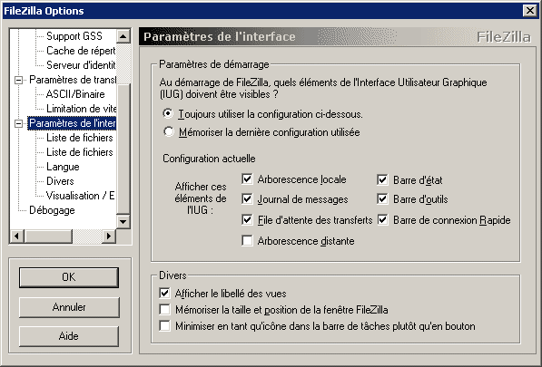

Configuration de l'Interface
Vue d'ensemble:
La section Paramètres de l'interface contrôle l'aspect visuel de la fenêtre de FileZilla.

Paramètres de démarrage:
Vous pouvez paramétrer l'aspect visuel de FileZilla pour chaque lancement.
Toujours utiliser la configuration ci-dessous: activez ce bouton radio si vous voulez que FileZilla conserve une aspect spécifique.
Près du label "Afficher ces éléments de l'IUG", vous pouvez choisit les éléments de FileZilla qui seront visibles:
Barre d'Outils
Barre d'État
Barre de connexion rapide: une barre en haut de la fenêtre principale de FileZilla où vous pouvez entrer rapidement les informations de connexion et vous connecter.
Journal des messages: cadre du haut de la fenêtre principale de FileZilla dans laquelle s'affiche le déroulement des communications entre FileZilla et le serveur FTP.
Arborescence locale: cadre de la moitié gauche de la fenêtre principale de FileZilla dans lequel s'affichent les dossiers de votre ordinateur local.
File d'attente des transferts: cadre du bas de la fenêtre principale de FileZilla dans lequel sont affichés les transferts.
Arborescence distante: cadre de la moitié droite de la fenêtre principale de FileZilla dans lequel sont affichés les dossiers de votre ordinateur distant.
Dans la sous-section Liste de Fichiers Locaux ou Liste de Fichiers Distants, vous pouvez choisir de quelle façon seront affichés les fichiers, par l'intermédiaire de la liste déroulante.
Détails: fonction similaire aux détails d'affichage de l'Explorateur Windows où chaque fichier est affiché avec des lignes de séparation de colonnes pour montrer ses attributs.
Grandes icônes: comme pour l'affichage Grandes icônes de l'Explorateur Windows où chaque fichier est représenté par une grande icône.
Liste: comme pour l'affichage Liste de l'Explorateur Windows où les fichiers sont affichés sous forme d'une liste.
Petites icônes: similaire aux Petites Icônes de l'Explorateur Windows où tout fichier est représenté par une petite icône.
Si vous affichez le mode Détails, vous pouvez déterminer quelles colonnes seront affichées en cochant les cases attenantes au label Colonnes visibles pour l'affichage....
Site Local:
Taille de fichier: taille du fichier
Type de fichier: type de fichier (c'est-à-dire fichier texte, application, etc.)
Date de dernière modification: l'indication d'horodatage de la dernière modification du fichier
Site Distant:
Taille de fichier: taille du fichier
Date/Heure: l'indication d'horodatage de la dernière modification du fichier
Permissions: les permissions concernant le fichier
Mémoriser la dernière configuration utilisée: validez ce bouton radio si vous voulez que FileZilla mémorise et utilise l'aspect qu'il avait lors de son dernier lancement. Dans ce cas, vous devrez utilisez le menu de la fenêtre principale pour modifier l'aspect visuel du programme
Divers:
Cochez Afficher le libellé des vues si vous voulez voir "Site Local:" et "Site Distant:" dans la barre de titre des cadres de répertoires correspondants dans la fenêtre principale de FileZilla.
Options supplémentaires:
Liste des fichiers locaux - Configure l'apparence de la liste des fichiers locaux
Liste des fichiers distants - Configure l'apparence de la liste des fichiers distants
Langue - installe la langue de l'interface de FileZilla
Divers - Options supplémentaires de configuration de l'interface
Visualisation / Édition de Fichier - Installe les association de type de fichier pour l'affichage / l'édition des fichiers distants